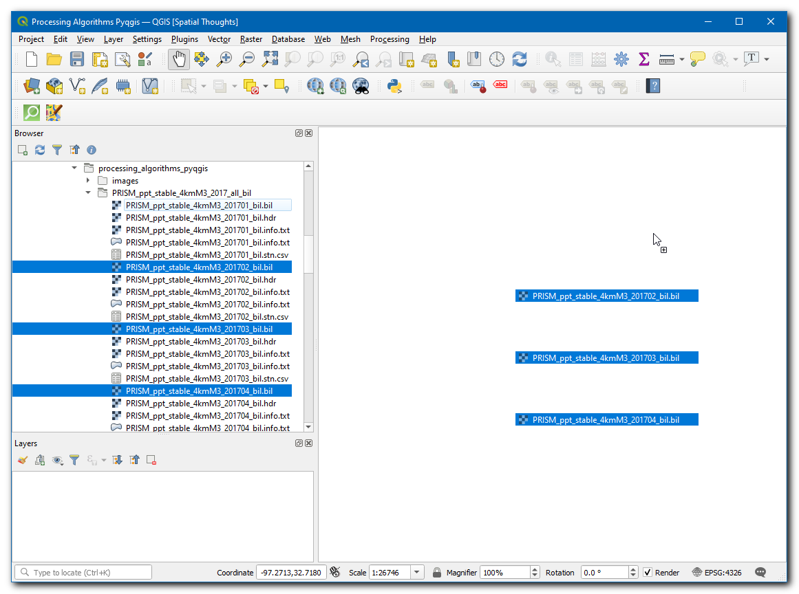
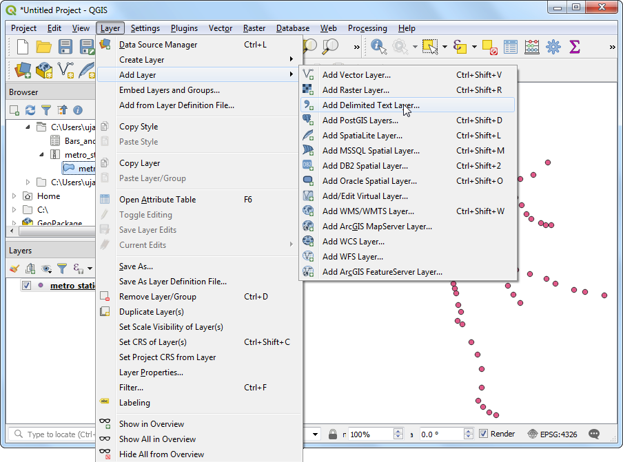
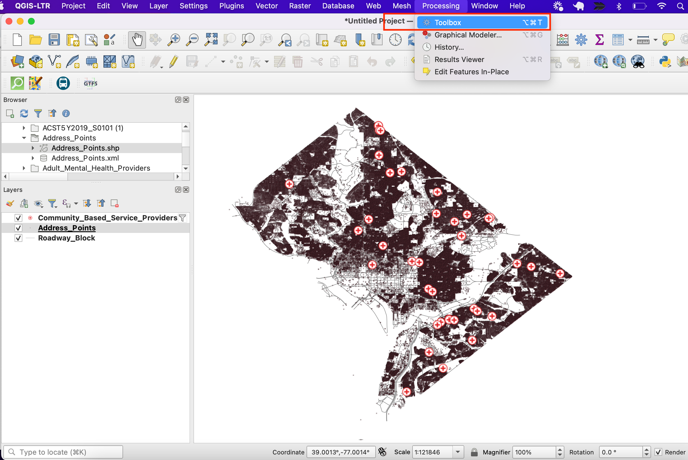
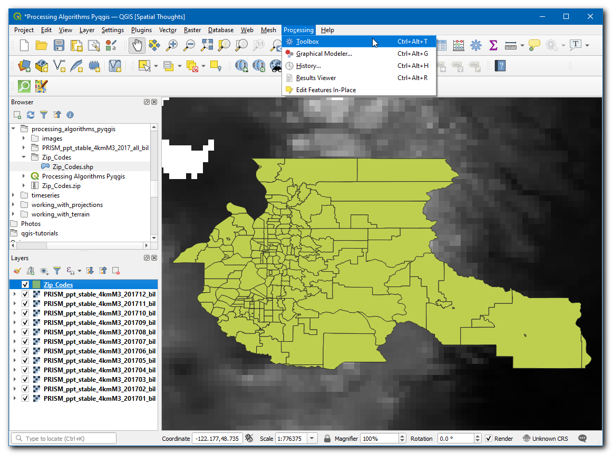
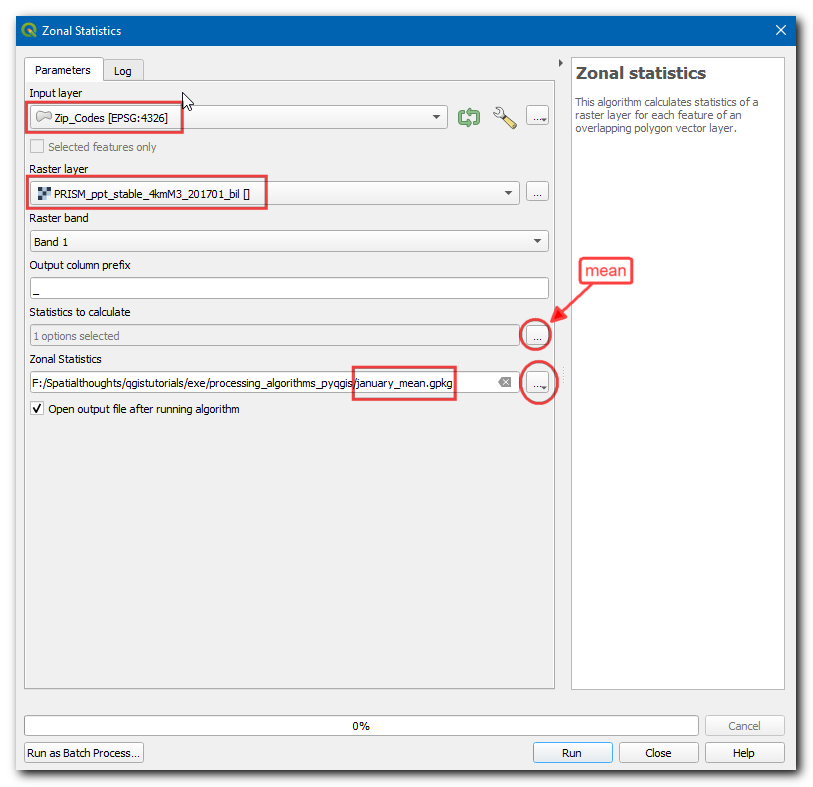

Trabajando con atributos (QGIS3)¶
Los datos SIG tienen dos partes - objetos espaciales (features) y atributos. Los atributos son datos estructurados sobre cada característica. Este tutorial muestra cómo ver los atributos de cada capa vectorial SIG y hacer consultas básicas sobre los mismos en QGIS.
Vista general de la tarea¶
Los conjuntos de datos para este tutorial contienen información de centros poblados de todo el mundo. La tarea es buscar y encontrar todas las ciudades capitales del mundo que tengan una población mayor a 1 millón y guardar el subconjunto resultante como un archivo GeoJSON
Otras habilidades que aprenderá¶
Seleccionar objetos espaciales de una capa usando expresiones.
Usar la barra de herramientas Atributos
Exportar objetos espaciales seleccionados en una capa.
Obtener los datos¶
Natural Earth provee un conjunto de datos Centros Poblados. Descargue el conjunto de datos simple (menos columnas)
Para su comodidad, puede descargar directamente una copia de los conjuntos de datos del enlace abajo:
ne_10m_populated_places_simple.zip
Fuente de Datos [NATURALEARTH]
Procedimiento¶
Ubique el archivo
ne_10m_populated_places_simple.zipen el Navegador QGIS y expándalo. Seleccione el archivone_10m_populated_places_simple.shpy arrástrelo al lienzo.

Una nueva capa
ne_10m_populated_places_simpleserá ahora cargada en QGIS y verá varios puntos que representan los lugares poblados del mundo. La vista predeterminada en el lienzo QGIS muestra la geometría de la capa SIG. Cada punto también tiene asociado atributos. Veámoslos. Ubique la Barra de Herramientas de Atributos. Esta barra de herramientas contiene varias herramientas útil para inspeccionar, ver, seleccionar, y modificar atributos de una capa.

Nota
Si no ve la barra de herramientas, puede habilitarla desde
Clic en el botón Identificar. Una vez que la herramienta esté seleccionada, clic sobre cualquier punto en el lienzo. Los atributos asociados de ese punto serán mostrados en el nuevo panel Resultados de Identificar. Una vez esté listo explorando atributos de diferentes puntos, puede hacer clic en el botón Cerrar.

En vez de ver el atributo de una entidad a la vez, queremos verlos todos juntos como una tabla. Clic en el botón Abrir Tabla de Atributos en la Barra de Herramientas de Atributos. También puede hacer clic-derecho sobre la capa
ne_10m_populated_places_simpley seleccionar Abrir Tabla de Atributos.

Puede deslizarse horizontalmente y localizar la columna pop_max. Este campo contiene la población del lugar asociado. Puede hacer clic dos veces en el encabezado del campo para ordenar la columna en orden descendente.

Ahora estamos listos para realizar nuestra consulta sobre estos atributos. QGIS usa expresiones similares a SQL para realizar consultas. Clic en el botón Seleccionar objetos espaciales usando una expresión.

En la ventana Seleccionar por Expresión, expanda la sección Campos y Valores y haga doble-clic a la etiqueta
pop_max. Notará que es agregada a la sección expresión abajo. Si no está seguro acerca de los valores de campo, puede hacer clic en Cargar todos los valores únicos para ver valores de atributos existen en el conjunto de datos. Para este ejercicio, estamos buscando encontrar todas los objetos espaciales que tienen una población mayor a un millón. Así que complete la expresión como está abajo y clic en Seleccionar Objetos Espaciales y luego en Cerrar.
"pop_max" > 1000000
Nota
En el motor de Expresión QGIS, el texto con comillas dobles se refiere a un campo y el texto con comillas simples se refiere a un valor de cadena de texto.
Notará que algunas filas en la tabla de atributos están ahora seleccionadas. La ventana de etiqueta también cambia y muestra el conteo de objetos espaciales seleccionados.

Cierre la ventana de la tabla de atributos y retorne a la ventana principal de QGIS. Notará que un subconjunto de puntos está ahora representado en amarillo. Esto es el resultado de nuestra consulta y los puntos seleccionados son aquellos que tiene un valor de atributo
pop_maxmayor a1000000.

Actualicemos nuestra consulta para incluir una condición que el lugar debería ser también una capital además de tener una población mayor a 1 millón. Para obtener rápidamente el editor de expresión, puede usar el botón Seleccionar Objetos Espaciales por Expresión en la Barra de Herramientas de Atributos.

El campo que contiene el dato acerca de capitales es adm0cap. El valor
1indica que el lugar es una capital. Podemos agregar este criterio a nuestra expresión previa usando el operador and. Ingrese la expresión como está abajo y clic en Seleccionar objetos espaciales y luego Cerrar.
"pop_max" > 1000000 and "adm0cap" = 1
Regrese a la ventana principal QGIS. Ahora verá un subconjunto más pequeño de puntos seleccionados. Este es el resultado de una segunda consulta y muestra todos los lugares del conjunto de datos que son capitales de país así como tienen una población mayor a 1 millón.

Ahora exportaremos los objetos espaciales seleccionados como una nueva capa. Clic-derecho en la capa
ne_10m_populated_places_simpley vaya a

Puede elegir cualquier formato de su preferencia en el Formato. Para este ejercicio, escogeremos
GeoJSON. GeoJSON es un formato basado en texto que es usado ampliamente en el mapeo web. Clic en el botón … junto a Nombre de archivo e ingresepopulated_capitals.geojsoncomo el archivo de salida.

Los datos de entrada tienen varias columnas. Sólo puede escoger un subconjunto de las columnas originales para exportación. Expanda la sección Seleccionar campos a exportar y sus opciones de exportación. Clic en Deseleccionar Todo y marque las columnas
nameypop_max. Clic en Aceptar.

Una nueva capa
populated_capitalsserá cargada en QGIS. Puede desmarcar la capane_10m_populated_places_simplepara esconderla y ver los puntos de la nueva capa exportada.